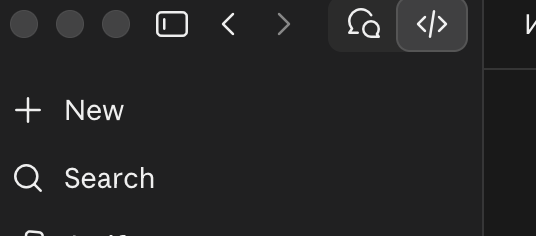
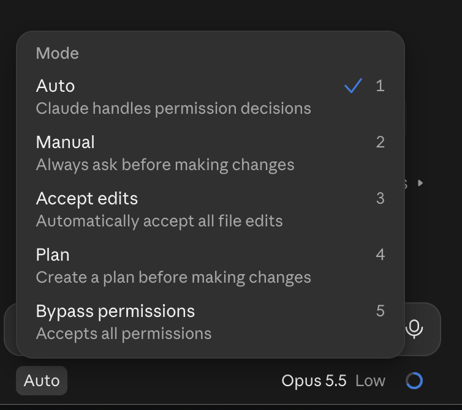
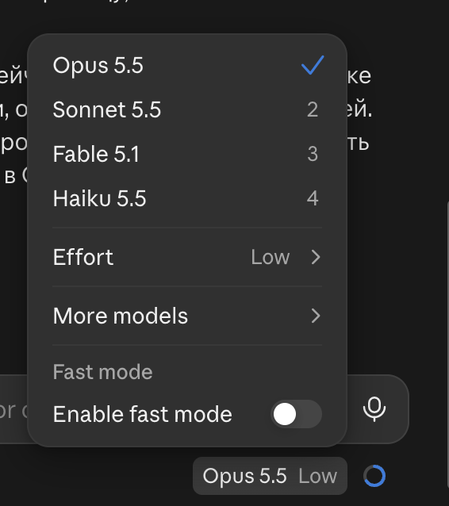
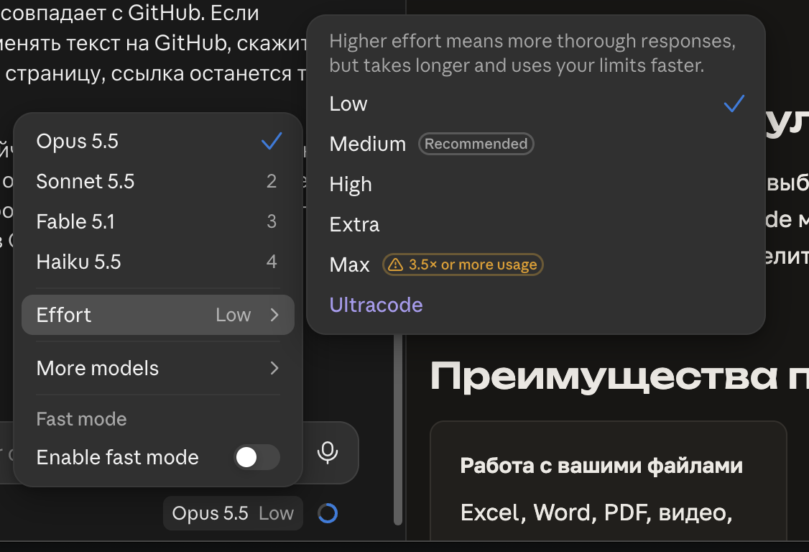
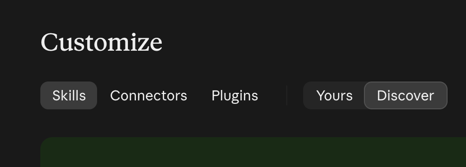

Выберите папку проекта
📁 Desktop/operations 3
📁 Desktop
Короткая инструкция для нового участника команды: что такое вкладка Code, чем она лучше обычного чата и как за 10 минут сделать первую задачу.
Отвечает текстом. Файлы надо загружать вручную, результат копировать к себе. Хорош для вопросов и черновиков.
Claude сам работает в папке на вашем компьютере: читает и создаёт файлы, запускает команды, открывает сайты во встроенном браузере, ведёт план задачи и показывает результат.
</>) 1.Desktop/operations.
Без папки сессия работает во временной папке и удаляется вместе с сессией. Для постоянной работы всегда выбирайте папку проекта.
Пишите как коллеге: что нужно, откуда взять данные, в каком виде результат. Claude составит план 4 и будет показывать каждое действие 5.
Перед изменением файлов, отправкой писем или публикацией Claude спрашивает разрешение. Режим выбирается кнопкой слева под полем ввода (на скриншоте — Auto):

Sales/октябрь-сводка.xlsx
Готовые файлы появляются в выбранной папке и открываются кликом прямо из чата. Страницы и отчёты Claude может опубликовать как приватный артефакт со ссылкой, которой можно поделиться с командой.
Excel, Word, PDF, видео, папки целиком. Не нужно загружать и скачивать вручную.
Доступ к Opus для сложных задач и большие лимиты использования.
Готовые сценарии через /: дайджест прессы, мониторинг персон, наративы, монтаж видео.
Почта, календарь, Notion, Slack, Google Drive, Jira — Claude читает и готовит черновики.
Сам открывает сайты, собирает информацию, проверяет страницы.
Несколько задач одновременно и регулярные задачи по расписанию, например утренний дайджест.
Модель переключается в поле ввода внизу (чип с названием модели).
Самая умная, быстрее всех расходует лимит. Для сложного анализа, длинных отчётов и многошаговых задач.
Баланс качества и скорости, экономнее Opus. Для большинства повседневных задач.
Самая быстрая и экономная. Для простого: переформулировать, разобрать список, короткая сводка.
Правило: начинайте с Sonnet и переключайтесь на Opus, если ответ недостаточно глубокий.
В том же меню есть Effort — насколько глубоко модель думает. Выше уровень — тщательнее ответ, но дольше и дороже по лимитам. Medium рекомендован по умолчанию, Low — для простых задач, High/Extra — для сложных. Max тратит лимит в 3,5 раза и больше, включайте только при необходимости. Fast mode ускоряет ответы той же модели.


claude есть команда /usage./schedule./schedule./loop, например /loop 30m проверь почту.Ставьте в рутину готовый навык (дайджест, мониторинг персоны), тогда результат каждый раз будет в одном формате.
Команды вводятся в поле сообщения и начинаются с /. Наберите /, чтобы увидеть полный список.
/compact — сжать контекстДлинная сессия забивает память модели, ответы становятся медленнее, лимит тратится быстрее. Команда сворачивает историю в краткую сводку и продолжает работу. Можно уточнить, что сохранить: /compact оставь только решения по отчёту. При переполнении Claude сжимает контекст и сам.
/clear — начать с чистого листаПолностью очищает историю сессии. Используйте, когда переходите к другой задаче. Удобнее просто открыть новую сессию.
/usage — лимитыСколько лимита израсходовано и когда он сбросится.
/schedule и /loopЗадачи по расписанию и повтор задачи в открытой сессии, подробнее в разделе о рутинах.
/init — память о проектеСоздаёт в папке файл CLAUDE.md с описанием проекта. Claude читает его в начале каждой сессии, и не нужно объяснять одно и то же заново.
/имя-навыкаЗапускает навык напрямую, например /narratives или /person-monitor.
Готовая инструкция для повторяющейся задачи: шаги, источники, формат результата. Навык делает так, что дайджест или отчёт каждый раз выходит одинаковым по структуре и качеству.
Как пользоваться: напишите задачу словами («сделай наративы за сегодня»), и Claude сам подберёт навык, или вызовите его через /. Новый навык можно создать, попросив: «сделай из этого навык».
Подключения к внешним сервисам: почта, календарь, Google Drive, Notion, Slack, Jira и другие. Через них Claude читает данные и готовит черновики прямо в этих сервисах.
Подключаются в разделе Customize → Connectors, вход в сервис делаете вы сами. Письма, публикации и другие действия наружу Claude выполняет только после вашего подтверждения.
Всё это находится в разделе Customize: вкладки Skills (навыки), Connectors (коннекторы) и Plugins (наборы навыков и коннекторов). Переключатель Yours / Discover показывает уже подключённое и каталог нового.
